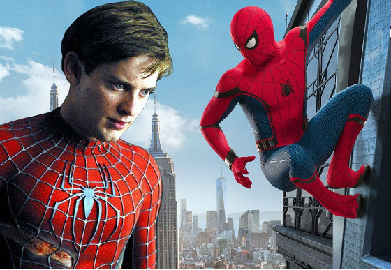
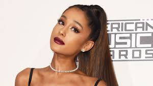
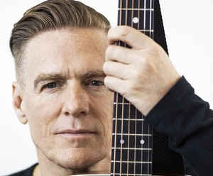
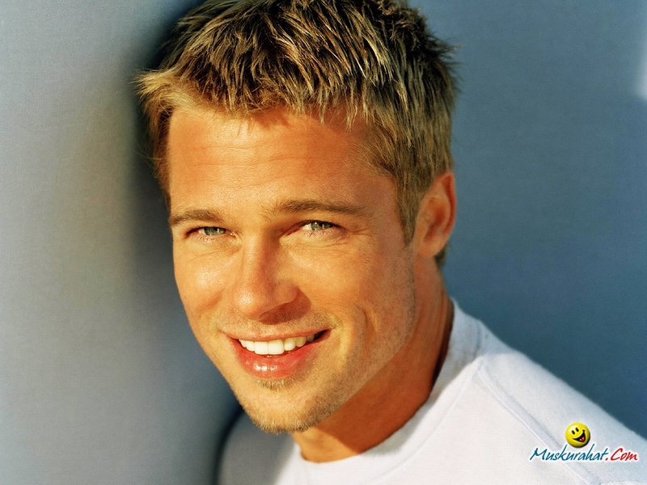

Vegetariano desde 1992, en 2009 se convirtió en vegano.
No fuma no bebe y practica yoga. Ha estado sobrio desde los 19 años después de tener problemas con el alcohol en su adolescencia.
Nació el 27 de junio de 1975 en Santa Mónica, California.
Hijo de Wendy Brown, una secretaria que también fue guionista y productora, y Vincent Maguire, un trabajador de la construcción y cocinero. Tiene cuatro hermanastros. Uno de sus bisabuelos paternos fue austríaco y una bisabuela puertorriqueña.
Sus padres tenían tan solo 18 y 20 años de edad en el momento de su nacimiento; se casaron y posteriormente se divorciaron cuando Tobey tenía dos años. Pasó gran parte de su infancia trasladándose de pueblo en pueblo viviendo con su padre y otros miembros de la familia. |
Tobey Maguire

Tobias Vincent Maguire
Actor estadounidense
|
El 3 de noviembre de 2013, se convirtió en vegana
Nació el 26 de junio de 1993 en Boca Ratón, Florida, Estados Unidos.
Hija de Joan Grande, directora ejecutiva de la empresa Hose-McCann Communications, y de Edward Butera, propietario de una empresa de diseño gráfico. Su madre tiene origen italiano.
Se le puso Ariana por la princesa Oriana, en la serie de dibujos animados de Félix el Gato (1959).
Sus progenitores se separaron cuando ella contaba nueve años de edad. Tiene un hermanastro, Frankie, actor, bailarín y productor, diez años mayor que ella.
Fue criada como católica, aunque según declaró después, abandonó esta religión tras desilusionarse durante el papado de Benedicto XVI, por la oposición de esta iglesia hacia el matrimonio homosexual. Padece hipoglucemia. |
Ariana Grande

Ariana Grande-Butera
Actriz, cantante y compositora estadounidense |
“El momento que empecé a entender lo que sucedía respecto al trato hacia los animales, me alumbró más y más en el camino en el que me encuentro actualmente, que es ser completamente vegano.”.
Nació el 5 de noviembre de 1959 en Kingston, Ontario (Canadá).
Hijo del militar y diplomático Conrad J. Adams, y de Elizabeth Jane Adams (Watson), emigrantes británicos. Tiene un hermano, Bruce.
A los 14 años, trabajó como lavaplatos intentando ahorrar dinero para una guitarra. Comenzó a ensayar como guitarrista mientras formaba su propia banda en un sótano alquilado en el norte de Vancouver. Bryan dejo la escuela a la edad de 16 años para tocar con su banda.
|
Bryan Adams

Bryan Guy Adams
Cantante canadiense |
Vegana por propia iniciativa desde los catorce años,después de observar una demostración médica en la cual utilizaron un pollo.
Nació el 9 de junio de 1981 en Jerusalem.
Hija única de Shelley Stevens, ama de casa estadounidense, y de Avner Hershlag, un ginecólogo israelí.
Sus abuelos maternos eran judíos inmigrantes de Austria y Rusia; sus abuelos paternos, también judios, también emigraron a Israel. Su abuela paterna, Mania, de Rumania, tenía el apellido de soltera "Portman".Para Natalie el veganismo es la verdadera filosofía de vida. La actriz no consume carne, pescado, no come productos lácteos, huevos, gelatina y todo lo que proviene de animales, no utiliza ropa hecha con piel de animales ni cosméticos testados en animales, no fuma, vive en una casa solar y conduce un coche ecologico. Ahora la actriz es una conocida miembro de la organización PETA, también es diseñadora de zapatos veganos de cuero artificial. |
Natalie Portman

Neta-Lee Hershlag
Actriz israelita |
vegano y activista de los derechos de los animales.
Nació el 18 de diciembre del 1963 en Shawnee, Oklahoma, Estados Unidos.
Hijo de Jane Etta Hillhouse y de William Alvin Pitt, gerente de una empresa de transportes.
La familia se trasladó a Springfield, Missouri, donde residió junto a sus hermanos menores, Doug (nacido en 1966) y Julie Neal (nacido en 1969). Fue criado en el seno de una familia muy religiosa, aunque se declara entre el agnosticismo y el ateísmo. |
Brad Pitt

William Bradley Pitt
Actor estadounidense |